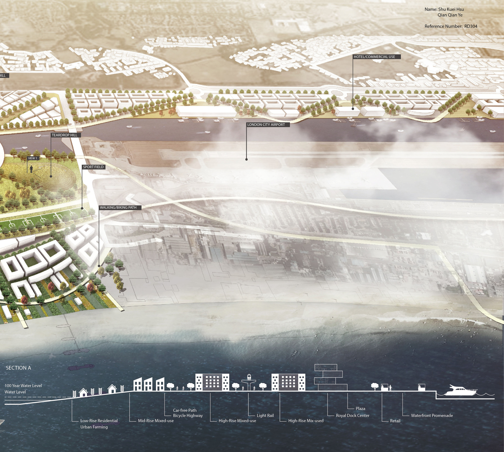
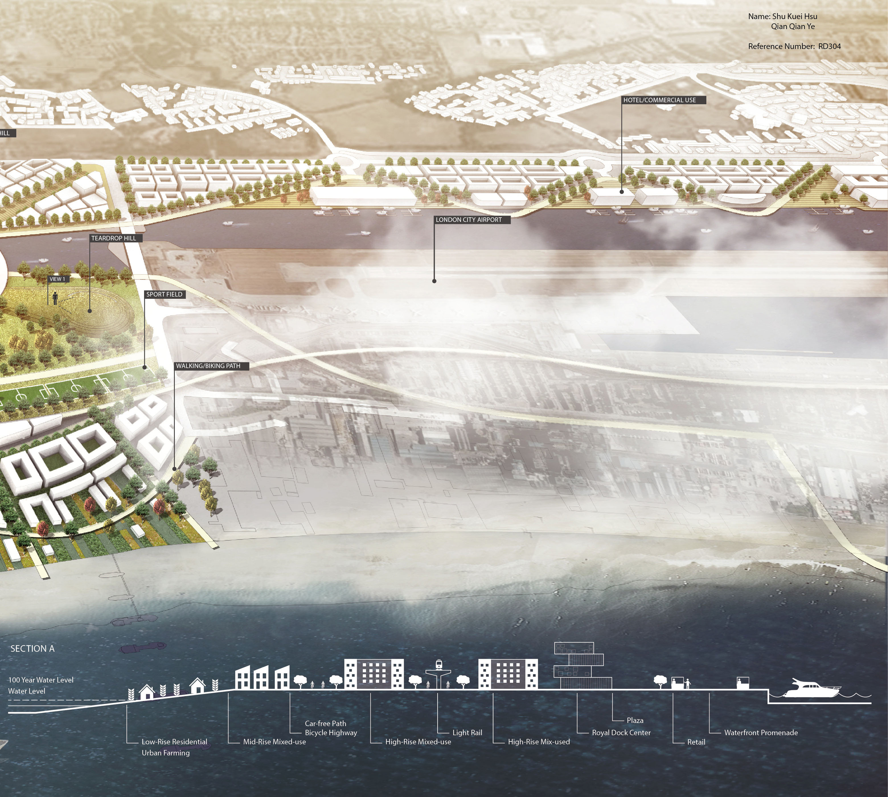

Resilient Dock
2014
The project was shortlisted in London Royal Docks Competition. I teamed up with Shu Kuei (Tako) Hsu who is one of the cofounders of BEE% . Our entry received a finalist award out of a total of 65 competition entries. Our entry was also exhibited at Ecobuild 2014, the world's leading event for sustainable design and construction at ExCel London at the Royal Docks on the 5th of March, 2014. The Landscape Institute and Ecobuild launched the competition, with support from the Mayor of London, London Borough of Newham, and Open-City. The competition looked for proposals to find innovative design concepts that would transform the Royal Docks into a multi-functional, livable space.
Info
Time: 02/2014, 2 Weeks
Location: London, UK
Partner: Shu Kuei (Tako) Hsu (BEE% bio)
Category
Urbanism
Landscape
 
